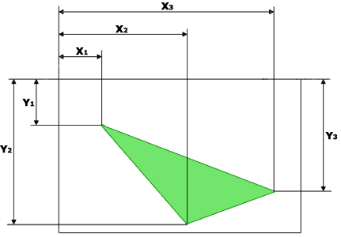

HTML тег <area> определяет активные области на изображении, которые
являются ссылками, эти области могут отличаться формой и размером.
Картинка (изображение) с активными областями, называется картой-изображением.
Такая картинка ничем не отличается от обычной, за исключением того, что
содержит активные области (ссылки). Области могут перекрывать друг друга,
сверху окажется та, которая в коде располагается первее (выше).
Элемент <area> используется только совместно с тегом
<map>в качестве его дочернего элемента.
Определяет альтернативный текст, который будет виден вместо изображения, если оно не может быть отображено (из-за медленной связи, ошибки в атрибуте src и тд).
Атрибут coords указывает координаты активной области на карте-изображения. Он используется вместе с атрибутом shape для указания размера, формы и размещения активной области. Возможные значения атрибута:
Определение координат для прямоугольника (shape="rect"):

Ссылки расположена на зелёных фигурах,наведите курсор и нажмите на него, чтобы убедиться.
Определение координат для окружности (shape="circle"):

Определение координат для многоугольника (shape="poly"):
